编译原理
本笔记基于上海交通大学 胡易坤老师 2024-2025 学年春季学期教学内容进行整理，部分图片来自胡老师的PPT，若有侵权请联系删除。
Quick Links
▶
考点跳转链接
Quick Check
▶
各类文法与解析方法
- LL(1) Grammar
- L: 从左到右扫描输入；L：最左派生；1：提前看一个输入符号
- 无左递归和左因子
- A → α | β表示两个不同的产生式，则FIRST(α)
和 FIRST(β)
是互不相交的集合
- 二者不会同时派生以a开头的字符串
- 至多一个α和β可以派生空字符串
- 如果ϵ ∈ FIRST(β)，则FIRST(α)和FOLLOW(A)是互不相交的集合
- LL(1) Parsing
- 提取左因子
- 消除直接左递归
- 计算FIRST和FOLLOW
- 构造预测分析表（列为终结符，行为非终结符）
- 从Start Symbol开始预测/或使用栈和输入缓冲区进行预测分析
- 查表（最左侧非终结符，最左侧未匹配输入符号）作为派生的产生式进行派生
- 若使用栈和输入缓冲区，则
- 若栈顶符号为终结符且与输入符号匹配，则出栈并将输入指针后移
- 若栈顶符号为非终结符，则查表（栈顶符号，输入指针对应符号）得到派生的产生式，将栈顶符号出栈并将产生式右侧符号逆序入栈
- 直到栈为空，输入指针指向$，则接受输入
- OG Grammar（算符文法）
- 任意生成式不含两个相邻的非终结符
- 不含空生成式
- OPP Grammar（算符优先文法）
- 首先满足OG Grammar的要求
- 任意两个终结符号对（有序）之间一定满足唯一的优先级关系
- OPP Parsing
- 计算LEADING和TRAILING
- 构造优先级关系表
- 使用栈和输入缓冲区进行运算符优先解析/或使用优先级爬升法
- 若栈顶终结符号优先级 <· / =· 输入符号优先级，则移进
- 若栈顶终结符号优先级 >· 输入符号优先级，则归约
- LR(0) Grammar
- L: 从左到右扫描输入；R：最右派生，最左归约；0：提前看一个输入符号
- 任一项集的状态转移不含归约-归约或移进-归约冲突
- LR(0) Parsing
- 扩展文法
- 通过GOTO和CLOSURE构造LR(0)项集族
- 构造LR(0)分析表（列为输入符号，行为状态）
- 使用栈和输入缓冲区进行LR(0)解析
- 查表，（栈顶，输入符号）为s n，则移进并push状态n到栈顶，
- 若为r m，则用第m条产生式进行归约，pop栈顶的符号数目等于产生式右侧符号数目，查（栈顶符号，产生式左侧符号）为n，则push状态n到栈顶
- 若为ACCEPT，则接受输入
- SLR(1) Grammar
- 任一项集的状态转移不含归约-归约或移进-归约冲突
- LR(0)项目集中存在归约-归约冲突时，两个FOLLOW集的交集为空
- LR(0)项目集中存在移进-归约冲突时，移进的终结符号不在归约的FOLLOW集中
- 任一项集的状态转移不含归约-归约或移进-归约冲突
- SLR(1) Parsing
- 扩展文法、构造集族同LR(0)
- 构造SLR(1)分析表时：
- 对A → β⋅ 归约时, 只对FOLLOW(A)中的终结符进行归约
- 对S′ → S′ 赋值ACCEPT时, 只对$接受
- 使用栈和输入缓冲区进行SLR(1)解析
- LR(1) Grammar
- L: 从左到右扫描输入；R：最右派生，最左归约；1：提前看一个输入符号
- LR(1)的项由两部分组成：LR(0)的项和一个lookahead符号
- 任一项集的状态转移不含归约-归约或移进-归约冲突
- 无归约-归约冲突：同一状态下如果有多个归约，则前瞻符号不相交
- 无移进-归约冲突：同一状态下如果同时有移进和归约，则移进的终结符号不在归约的前瞻符号中
- LR(1) Parsing
- 扩展文法
- 通过GOTO和CLOSURE构造LR(1)项集族
- 构造LR(1)分析表时：
- 对[A → β⋅, a] 归约时, 只对a进行归约
- 对[S′ → S⋅, $] 赋值ACCEPT时, 只对$接受
- 使用栈和输入缓冲区进行LR(1)解析
- LALR(1) Grammar
- LA: LookAhead；L: 从左到右扫描输入；R：最右派生，最左归约；1：提前看一个输入符号
- LALR(1)的项集族是LR(1)的项集族的同心集合并
- 任一项集的状态转移不含归约-归约或移进-归约冲突
- LALR(1) Parsing
- 扩展文法、构造集族同LR(0)作为心
- 对每个状态的初始项的心，用占位符#作为前瞻符号，通过闭包计算自发生成的前瞻符号和传递关系
- 对于传递关系，保留每个状态的内核项，构造传播表
- 根据传播表和自发生成的前瞻符号，通过若干轮传播得到每个心最终对应的前瞻符号，得到归约内核项的[心，前瞻符号(若干个)]对
- 构造LALR(1)分析表，与LR(1)相同
- 使用栈和输入缓冲区进行LALR(1)解析
Ch1 Intro
编译流程
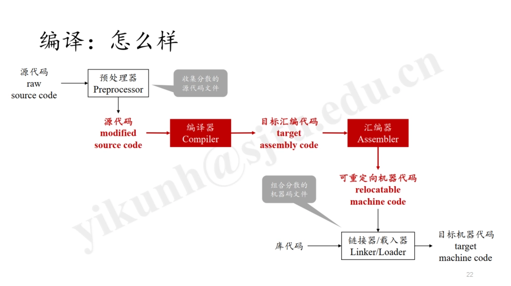
- 解释器 vs. 编译器 (Interpreter vs. Compiler)
- 解释器方便错误诊断 (Error Diagnosis)
- 编译器得到的代码更加高效 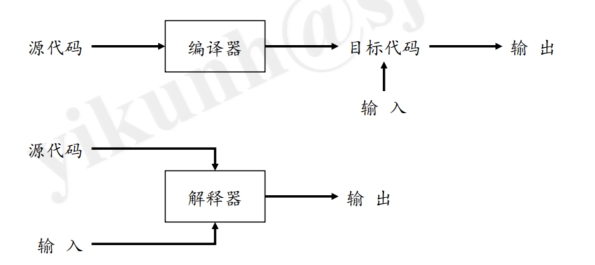
编译器
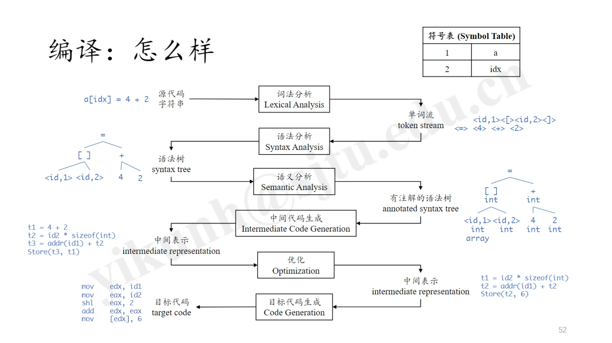
- 前端：词法分析(Lexical Analysis)、语法分析(Syntax Analysis)、语义分析(Semantic Analysis)、中间代码生成(Intermediate Code Generation)
- 后端：代码优化(Optimization)、目标代码生成(Code Generation)
词法分析：Lexical Analysis
- Lexical Analysis: Scanning （词法分析：扫描）
- Lexical Analyzer: Scanner （词法分析器：扫描器）
- Recognize Words (Lexemes) -> Tokens & Symbol Table （识别单词（词素）-> 生成标记和符号表）
- Token: <token-name, attribute-value (opt.)>
- token-name: id, number, keywords, operators, etc. （标记名：标识符、数字、关键字、运算符等）
- attribute-value: a pointer to the symbol table （属性值：指向符号表的指针）
语法分析：Syntax Analysis
- Syntax Analysis: Parsing （语法分析：解析）
- Syntax Analyzer: Parser （语法分析器：解析器）
- Produce the Grammatical Structure （生成语法结构）
- The Relationships among Tokens （标记之间的关系）
- Tree-like Intermediate Representation （树状中间表示）
- Parse Tree （解析树）
- Parser generates the Parse Tree, from which produces the Syntax Tree （解析器生成解析树，从中生成语法树）
- Syntax Tree: Simplified Parse Tree （语法树：简化的解析树）
- Interior Node: Operation （内部节点：操作）
- Children: Arguments of the Operation （子节点：操作的参数）
词法分析 vs. 语法分析
- 做着相似的事情：处理字符串
- 词法分析 (Scanning)：拆分字符串成Lexemes，并抽象成Tokens
- 语法分析 (Parsing)：整理Tokens的逻辑关系
语义分析：Semantic Analysis
- Semantic Analysis （语义分析）
- computing additional info needed for compilation
（计算编译所需的附加信息）
- which is not regarded as syntax （这些信息不被视为语法）
- checking source code semantic consistency with the language
definition （检查源代码与语言定义的语义一致性）
- Type Checking （类型检查）
- computing additional info needed for compilation
（计算编译所需的附加信息）
中间代码生成：Intermediate Code Generation
- Intermediate Code Generation （中间代码生成）
- Intermediate Representations (IR), e.g., Syntax Tree, etc. （中间表示，例如语法树等）
- Low-level or Machine-like IR （低级或类似机器的中间表示）
- LLVM-IR (LLVM, Clang), Gimple (GCC), etc. （LLVM-IR（LLVM，Clang），Gimple（GCC）等）
- Three-address Code, with at Most Three Operands per Instruction （三地址码，每条指令最多三个操作数）
- Static Single Assignment (SSA) （静态单赋值）
- Every variable is only assigned (defined) once and defined before used. （每个变量只能被赋值（定义）一次，并且在使用前必须定义。）
优化：Optimization
- Optimization （优化）
- Improve the IR for Better Target Code （改进中间表示以生成更好的目标代码）
- Better: Faster, Smaller, Greener （更好：更快、更小、更环保）
目标代码生成：Target Code Generation
- Target Code Generation （目标代码生成）
- Instruction Selection （指令选择）
- RISC vs. CISC
- RISC: Reduced Instruction Set Computer （精简指令集计算机）
- CISC: Complex Instruction Set Computer （复杂指令集计算机）
- Intel Manual: > 6000 Pages （英特尔手册：超过6000页）
- RISC vs. CISC
- Register Allocation （寄存器分配）
- Graph Coloring Problem （图着色问题）
- Evaluation Order （计算顺序）
- Arrange the Computation Order for Less Register Occupation （安排计算顺序以减少寄存器占用）
- NPC (Non-Polynomial Complete) Problem （非多项式完全问题）
- Instruction Selection （指令选择）
Ch2 Syntax Definition
文法的定义：Definition of Grammars
定义
- Grammar: a Set of Rules to Describe a Language.
- Language: a Sorted Set of Strings over some fixed Alphabet.
- 关系：Grammar Abstracts the Language to Cover All Its Strings. （文法是对语言的抽象，覆盖了语言的所有字符串）
- ∅: Empty Language (Set of Strings)
- 𝜺: Empty String (Set of Symbols)
组成
- Grammar G[S] = (VN, VT, P, S)
- VT: A set of Terminal Symbols (终结符)
- Atomic: 基本符号，不可再分
- VN : A set of Non-terminals (非终结符)
- A Non-terminal: a set of strings of Terminals
- P: A set of Productions (生成式、规则)
- A Non-terminal, an Arrow, a sequence of Terminals and/or Non-terminals
- S: A Start Symbol (开始符)
- A Non-terminal
- VT: A set of Terminal Symbols (终结符)
推导：Derivations
定义
- A Grammar derives strings by beginning with the Start
Symbol and repeatedly replacing a Non-terminal
with Terminals via its Productions.
（文法通过从开始符开始，反复用生成式将非终结符替换为终结符来派生字符串）
- 推导（Derivation）：反复根据生成规则用终结符替换非终结符
- 归约（Reduction）：推导的反过程
语法分析（Syntax Analysis, Parsing）
- given a sequence of Terminals, figure out Whether it can be Derived from the Grammar and How if possible. （给定一个终结符序列，判断它是否可以由文法推导而来，如果可以，推导过程是什么）
- 一个语言可能有多个文法描述，而一个文法只会派生一个唯一语言
文法的二义性：Ambiguity
定义
- 语法树（Parse Tree）: A Graphical Representation of a Derivation without the Order of Applying Productions. （语法树是一个图形表示，表示了一个推导过程，但不考虑生成式应用的顺序）
- 二义性（Ambiguity）: When Parsing, given a sequence of Terminals, a Grammar is Ambiguous if there are more than one Parse Tree for the Derivation.（二义性是指一个文法可以产生多棵语法树） ### Fix the Grammar
- Example:
- stmt -> if expr then stmt | if expr then stmt else stmt | other
- if E1 then if E2 then S1 else S2
- Match each else with the closest unmatched then
- the statement appearing between a then and an else must be “matched”
- the interior statement must not end with an unmatched (open) then
- Listing All Cases then Tidying Them Up
- if expr then matched_stmt
- if expr then open_stmt
- if expr then matched_stmt else matched_stmt
- if expr then matched_stmt else open_stmt
- so that:
- matched_stmt -> if expr then matched_stmt else matched_stmt | other
- open_stmt -> if expr then matched_stmt | if expr then open_stmt | if expr then matched_stmt else open_stm
- finally:
- stmt -> matched_stmt | open_stmt
- matched_stmt -> if expr then matched_stmt else matched_stmt | other
- open_stmt -> if expr then stmt | if expr then matched_stmt else open_stmt
文法和语言的分类：Classes of Languages
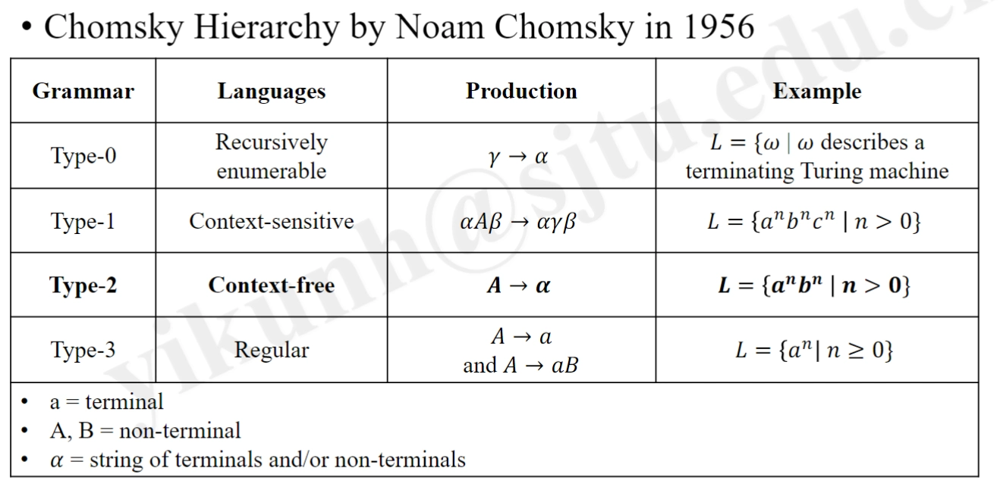
- 范围由 Type 0 到 Type 3 逐渐缩小
Ch3 Scanning
词法分析：Lexical Analysis
Token, Pattern, and Lexemes
- The Analysis Partitions Input String into Substrings. （分析将输入字符串划分为子字符串。） 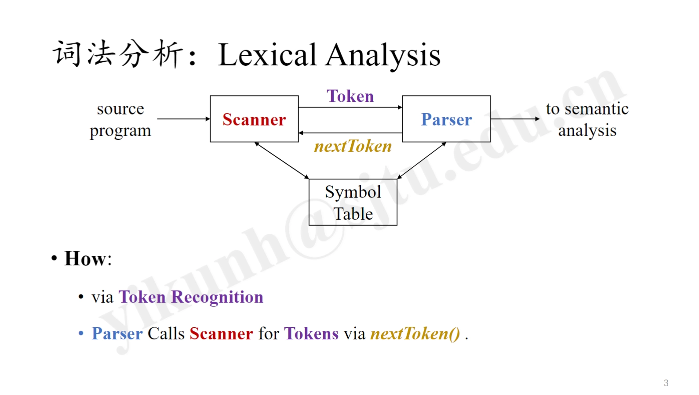
- Token: <token-name, attribute-value(opt.)>
- token-name: the role of lexical unit （词法单元的角色）
- often refer to Token by its token-name
- attribute-value: any info associated to the Token
（与Token相关的任何信息）
- Generally, it has only ONE value: a pointer to the Symbol Table
（通常只有一个值：指向符号表的指针）
- In practice, the value of a constant can be stored as the attribute.
（在实践中，常量的值可以作为属性存储。）
- constant: strings, numbers （常量：字符串、数字）
- In practice, the value of a constant can be stored as the attribute.
（在实践中，常量的值可以作为属性存储。）
- Generally, it has only ONE value: a pointer to the Symbol Table
（通常只有一个值：指向符号表的指针）
- token-name: the role of lexical unit （词法单元的角色）
- Pattern: description of the form lexemes of a token
may （描述词法单元的形式）
- regular expression: , ?, *, +, …
- Lexeme: a sequence of characters matches a token’s
pattern （与模式匹配的字符序列）
- Token vs. Lexeme: Class vs. Instance in C++
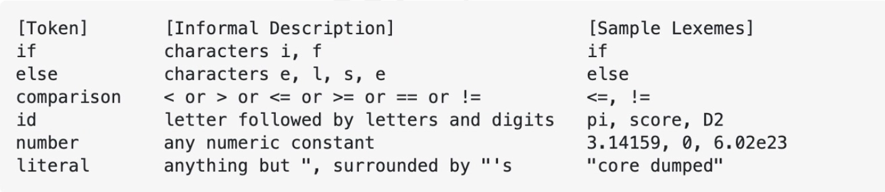
Specification of Tokens
Strings and Languages
- String: a finite sequence of Symbols from an Alphabet （字符串：来自字母表的有限符号序列）
- Language: any countable set of Strings （语言：任何可数的字符串集合）
- Terms for Parts of a String s （字符串s的部分术语）:
- prefix：前缀
- any string obtained by removing zero or more symbols from the end of s
- suffix：后缀
- any string obtained by removing zero or more symbols from the beginning of s
- substring：子串
- any string obtained by removing any prefix or any suffix from s （去掉前缀或后缀）
- subsequence：子序列
- any string obtained by removing zero or more not necessarily consecutive position of s （不一定连续的位置）
- prefix：前缀
Operations on Languages
- Union: （并集）
- L1 ∪ L2 = {x|x ∈ L1 or x ∈ L2}
- Concatenation: （连接）
- L1L2 = {xy|x ∈ L1 and y ∈ L2}
- Kleene closure: （星闭包）
- $L^* = \bigcup_{1=0}^\infty L^i \\= {𝜖} ∪ L ∪ L^2 ∪ L^3 ∪ ... \\= \{x | x = x_1x_2...x_n, n ≥ 0, xi ∈ L\}$
- 𝜖 is the empty string
- Positive closure: （正闭包）
- $L^+ = \bigcup_{1=1}^\infty L^i \\= LL^* \\= \{x | x = x_1x_2...x_n, n ≥ 1, xi ∈ L\}$
Regular Expressions
定义
- Regular Expression (Regex): a way to describe
Patterns of Tokens of a programming language.
（正则表达式：描述编程语言的词法单元模式的一种方式）
- Each Regular Expression r denotes a Language L(r).
（每个正则表达式r表示一个语言L(r)）
- Regular Language, Type-3 Language
- The Regular Expressions are built recursively out of smaller ones, using the rules. （正则表达式是用规则递归构建的）
- Each Regular Expression r denotes a Language L(r).
（每个正则表达式r表示一个语言L(r)）
语法
- BASIS （基础）
- 𝜀 is a regular expression, and L(𝜀) = {𝜀}, the empty set. （空字符）
- a is a symbol in a set Σ, then a is a regular expression, and L(a) = {a}. （集合中的字符）
- INDUCTION （归纳）：Suppose r and s are expressions denoting L(r) and L(s)
- r|s : a regular expression denoting L(r) ∪ L(s)
- rs : a regular expression denoting L(r)L(s)
- r* : a regular expression denoting (L(r))*
- (r) : a regular expression
denoting L(r)
- We can add additional brackets around expressions. （我们可以在表达式周围添加额外的括号。）
- 定律：

Regular Definitions
- Regular Definition: a set of productions with non-terminals derived by regular expressions. （正则定义：一组通过正则表达式派生的非终结符的产生式）
Extensions of Regex
- + : one or more instances
- r* = r+ | 𝜖
- r+ = rr* = r*r
- ? : zero or one instance
- r? = r | 𝜖
- [ ] : character classes
- [abc] = a | b | c
- [a − z] = a | b | … | z
Regular Language / Grammar, and Regex
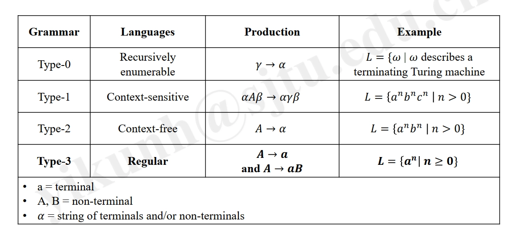
- Regular Expression r denotes a Language L(r).
- Regular Language is Type-3 Language （正则语言是类型3语言）
- Regular Language is that denoted by Regular Expressions. （正则语言是由正则表达式表示的）
- Regular Grammar is the grammar describes a Regular
Language.
- with the production form of A → α or A → αB
Recognition of Tokens
Input Buffer
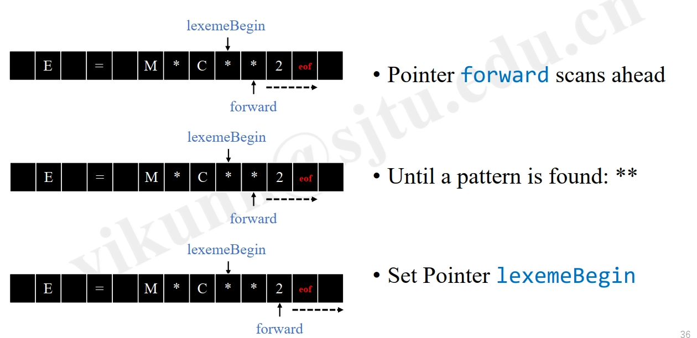
Transition Diagrams
- Transition Diagram = Nodes + Edges, a Flowchart
（状态流程图 = 节点 + 边）
- Nodes: states, conditions that
could occur when looking for a lexeme that matches one pattern.
（节点：状态）
- States: Circles （状态：圆圈）
- Start State: Arrowhead, Beginning of a Pattern （起始状态：箭头，开始）
- End State(s): Double Circles, End of a Pattern （终止状态：双圆圈，结束）
- Edge: actions, taken to transit
from one State to Another. （边：动作）
- labeled by a Symbol or a set of Symbols for matching （标记为符号或符号集以进行匹配）
- Deterministic: at most ONE edge out of a given state with a given label. （确定性：在给定状态下，最多有一条边）
- Nodes: states, conditions that
could occur when looking for a lexeme that matches one pattern.
（节点：状态）
- Example: 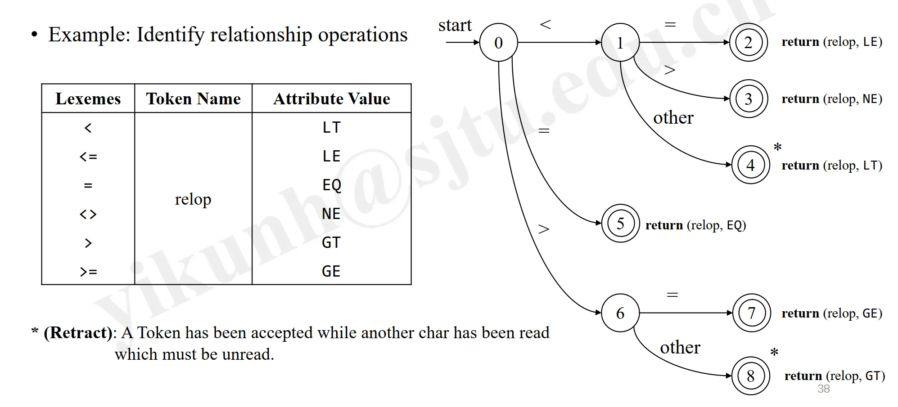
- *(Retract): A Token has been accepted while another char has been read which must be unread. （回退：一个Token已经被接受，而另一个不应读取字符已经被读取，必须回退）
Reserved Words （保留字）
- Keywords look like Identifiers.
- if, then, …
- Add reserved words into symbol table initially. （在符号表中添加保留字）
- Create separate transition diagrams for each
keyword. （为每个关键字创建单独的转换图）
- thenextone
- 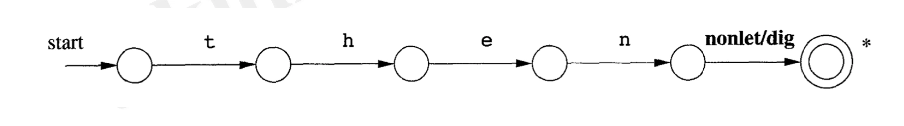
有穷自动机：Finite Automata
Finite Automata
- What: an Abstract Machine that can be in exactly
one of a Finite number of States at any given time.
（有限自动机：在任何给定时间只能处于有限数量的状态之一的抽象机器）
- Finite Automation = Finite-state Automation (FSA, plural: automata)
（有限自动机 = 有限状态自动机）
- Finite-state Machine (FSM), or simply State Machine （有限状态机，或简单地称为状态机）
- changes from one state to another according to Inputs, called Transition （根据输入，从一个状态变化到另一个状态，称为转换）
- Finite Automation = Finite-state Automation (FSA, plural: automata)
（有限自动机 = 有限状态自动机）
- Why: used as the Recognizer for Scanning, identifying Tokens （用于扫描的识别器，识别token）
- How: answers “YES” or “NO” about each input String
（如何：对每个输入字符串回答“是”或“否”）
- determines whether the String is valid for the given Grammar （确定字符串是否符合给定的语法）
DFA vs. NFA
- FA: Deterministic (DFA) or Non-deterministic (NFA)
- DFA: have exactly/at most one
action for each input symbol （每个输入符号有一个动作）
- can be represented with a Transition Diagram
- Recognition with DFA: Faster, may take More Space （识别DFA：更快，可能占用更多空间）
- complex to represent Regex, but more Precise, widely used （复杂表示正则表达式，但更精确，广泛使用）
- NFA: can have multiple actions for
the same input symbol （同一输入符号可以有多个动作）
- can be represented with a Transition Graph
- Recognition with NFA: Slower, may take Less Space （识别NFA：较慢，可能占用更少的空间）
- simply represents Regex, but less Precise （简单表示正则表达式，但不够精确）
- Example: 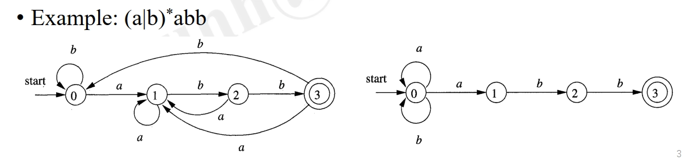
- Lexical Analysis Workflow with FA:
- Regex -> NFA -> DFA
- Regex -> DFA
Nondeterministic Finite Automata (NFA)
- An NFA M = (S, 𝜮, move, 𝒔0, F)
consists of:
- S: a finite set of States （有限状态集）
- 𝜮: the Input Alphabet, excluding 𝜖 （不包含𝜖的输入符号集合）
- move,
a Transition Function （转换函数）
- move(State, Symbol) = set of Next States
- move: 𝑆 × (Σ ∪ {𝜖}) ⟶ ℙ(𝑆)
- s0 ∈ S, the Start State (or Initial State) （起始状态）
- F ⊆ S, a set of Accepting States (or Final States) （终止状态）
- An NFA accepts Input String s iff
- there exists some path in the Transition Graph from the Start State to one Accepting State, （存在一条路径从起始状态到一个接受状态）
- such that symbols along the path spell out s （路径上的符号拼写出s）
- Transition Tables：rows for
States, columns for Input Symbols and 𝝐
- Example: 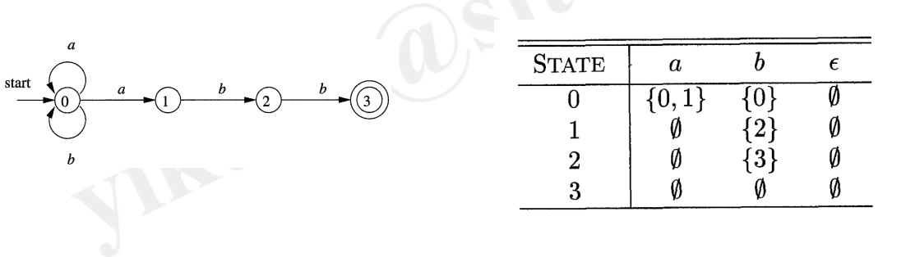
Deterministic Finite Automata (DFA)
- What: a Special Case of an NFA, where
- there are no moves on symbol 𝜖, and
- for each state s and input symbol a, there is Exactly
ONE edge out of s labeled by a.
（每个状态s和输入符号a，恰好有一条边出s标记为a）
- COMPLETE: It defines from each state a transition
for each input symbol. （完整：它定义了从每个状态到每个输入符号的转换）
- Transition function is a total function.
- Local Automation: DFA not necessarily complete (…
At Most ONE edge …) （局部自动机：DFA不一定是完全图）
- Transition function is a partial function.
- COMPLETE: It defines from each state a transition
for each input symbol. （完整：它定义了从每个状态到每个输入符号的转换）
Algorithm for Simulation
Conversion: NFA –> DFA
- Subset Construction （子集构造）
- removing 𝜖-transitions
- combining multiple NFA’s states into ONE constructed DFA’s state （将多个NFA的状态组合成一个构造的DFA的状态，即：等势点合并）
- Definitions:
- 𝜖-closure(s):
- s: some State
- = Set of NFA States reached by state s via 𝜖-transitions, including s itself. （NFA中可以通过若干个空变换到达的状态的集合）
- 𝜖-closure(T):
- T: set of States
- = ∪s ∈ T 𝜖-closure(s)
- move(T, a):
- T: set of States
- a: Input Symbol
- = NFA’s States reached by 𝑠 ∈ 𝑇 on a.
- 𝜖-closure(s):
- Algorithm Subset Construction
- Input: the start State s0 and the Transition Diagram of NFA N.
- Output: Transition Graph of DFA Dtran
1
2
3
4
5
6
7
8
9
10
11add 𝝐-closure(s0) into Dstates //将初始状态s0的𝝐闭包加入Dstates while (Dstates has unsearched state S) { //当Dstates有未搜索的状态S时 tag S as searched //将S标记为已搜索 foreach input symbol a { //对每个输入符号a U = 𝝐-closure(move(S, a)) //设U为S进行a动作后状态S'的𝝐闭包 if (U is new to Dstates) { //如果U是Dstates中的新状态 add U into Dstates as unsearched //将U加入Dstates并标记为未搜索 } Dtran(S, a) = U //将Dtran(S, a)设为U } } - 最后得到的Dtran是一个DFA的转换表，Dstates是DFA的状态集合。
- Algorithm 𝜖-closure(T) Computation:
- 上一步中
U = 𝝐-closure(move(S, a))的实现逻辑： - Input: the State Set T
- Output: 𝜖-closure(T)
1
2
3
4
5
6
7
8
9
10push all states in T onto Stack //将T中的所有状态压入栈中 while (Stack is not empty) { //当栈不为空时 s = Stack.pop() //弹出栈顶元素s foreach (state u reached by s via 𝜖) { //对于每个s通过𝜖能达到的状态u if (u is not in 𝜖-closure(T)) { //如果u不在T的𝜖闭包中 add u into 𝜖-closure(T) // 将其加入T的𝜖闭包 Stack.push(u) //将u压入栈中 } } }
- 上一步中
- Example: 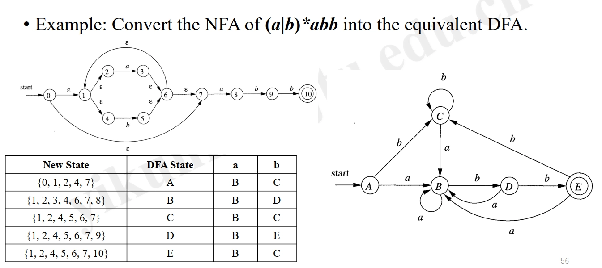
Conversion: Regex –> NFA
- McNaughton-Yamada-Thompson Algorithm
- Regex’s Definition:
- BASIS: 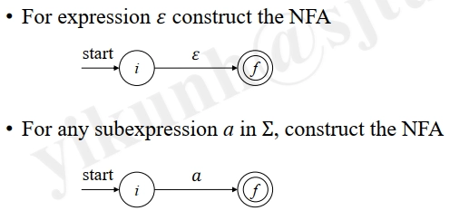
- INDUCTION: 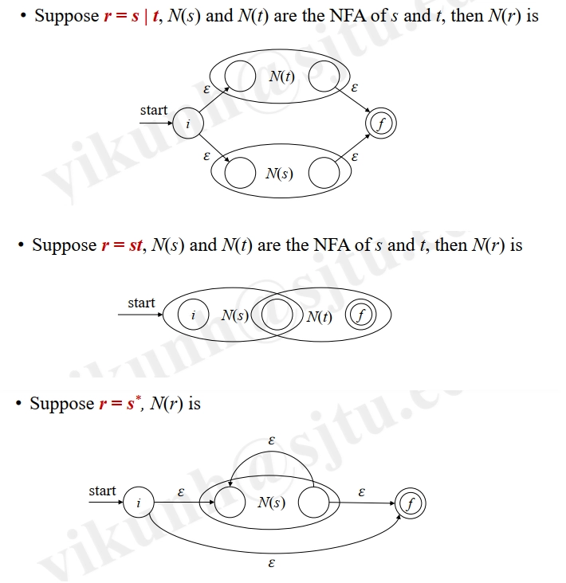
- Example: 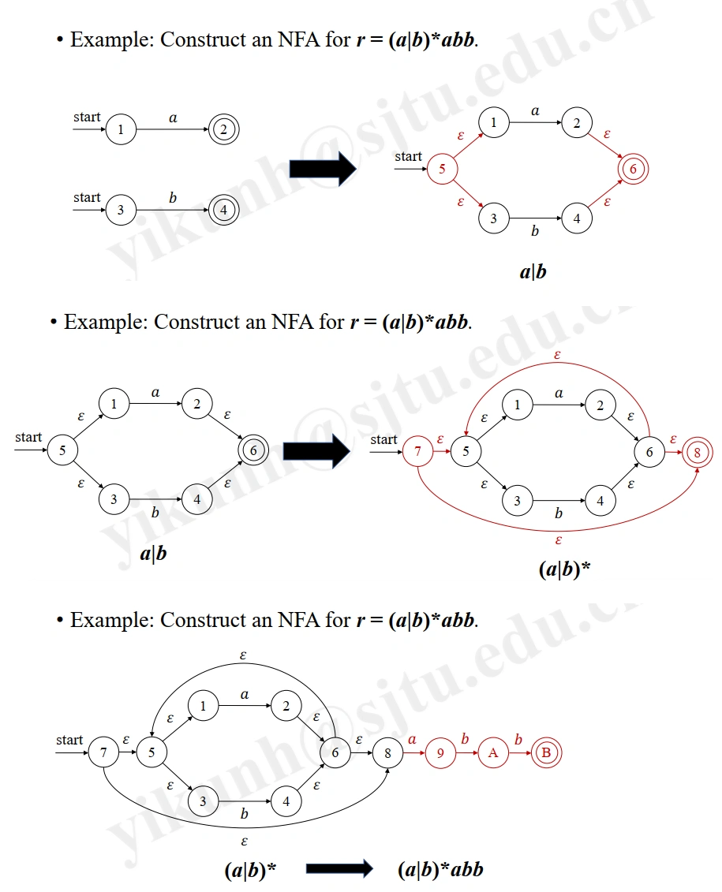
Workflow
- The Workflow of Lexical Analyzer
- Regex –> NFA Construction
- NFA –> DFA Construction
- Simulating DFA to Recognize Tokens
- Convert Regex Directly into DFA: PASS
- DFA Simplification: Minimizing the Number of States
DFA Simplification
- What and Why:
- no REDUNDANT states （无冗余状态）
- REDUNDANCE: the states that NO accepted input string’s path passes through （没有路径到达终止状态的状态）
- (in the transition graph)
- no EQUIVALENT states （无等效状态）
- EQUIVALENCE: states with the SAME side effects （具有相同副作用的状态）
- (making the states indistinguishable)
- Distinguish States via Input String
（通过输入字符串区分状态）
- State: s, t
- String: x
- x distinguishes s from t,
- if one state can reach an accepting state via x, while the other cannot. （如果一个状态可以通过x到达终止状态，而另一个状态不能）
- s is distinguishable from t,
- if there is some string distinguishes them. （存在一些字符串可以区分它们）
- Unify Indistinguishable States into One. （将不可区分的状态合并为一个）
- no REDUNDANT states （无冗余状态）
- How：
- Start with the initial partition Π with two groups, the accepting and non-accepting states of the DFA. （将DFA的接受状态和非接受状态分为两个组）
- Let Πnew := Π.
Then, for each group G
of Π: （初始时令Πnew = Π，然后对于每个组G）
- For each input symbol a, states s, t in G are partitioned if they transit to different groups of Π via a; （对于每个输入符号a，如果状态s和t通过a转移到不同的组，则他们被划分为不同的组）
- Replace G in Πnew by the new subgroups. （用新的子组替换G）
- If Πnew ≠ Π, Π : = Πnew and repeat Step 2, Step 4 otherwise. （如果Πnew ≠ Π，则令Π : = Πnew并重复步骤2，否则跳到步骤4）
- Aggregate the transitions among groups. （将组之间的转换聚合）
- The resulting DFA is the minimized DFA. （得到的DFA是最小化的DFA）
- Example: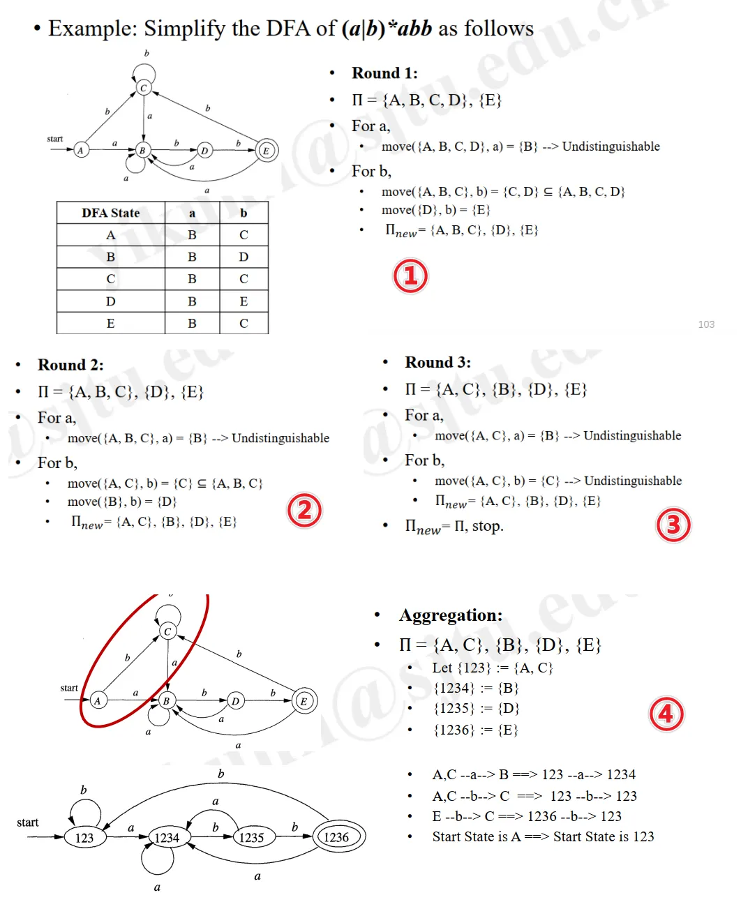
Ch4 Parsing
词法分析：Lexical Analysis
Parser
- What: Given Tokens, Parsing Verifies whether the Token Names Can Be Generated by the Grammar for the Source Language. （给定tokens，解析会验证token名称是否可以由源语言的语法生成）
- Why: We expect the Parser
- to report Syntax Errors （报告语法错误）
- to recover from Errors to continue following processes. （从错误中恢复以继续后续过程）
- How: Derivation or Reduction
- Top-down and Bottom-up Parsing
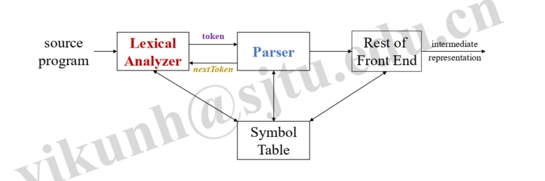
Compiler Errors
- Lexical Errors
- The string does not match the pattern of any token. （字符串与任何token的模式不匹配）
- Syntactic Errors
- The string does not meet the requirements of the grammar. （字符串不符合语法要求）
- Semantic Errors: Type Mismatching （语义错误：类型不匹配）
Error-Recovery Strategies
- Panic-Mode Recovery
- Discarding input symbols one at a time until meeting synchronizing
tokens （丢弃输入符号，直到遇到同步tokens）
- synchronizing tokens, e.g. “;”, “}”, etc., decided by designers
- simple, but may cause more errors
- Discarding input symbols one at a time until meeting synchronizing
tokens （丢弃输入符号，直到遇到同步tokens）
- Phrase-Level Recovery
- Local Correction on Input, allowing the parser to continue
（允许解析器继续）
- e.g., “,” → “;”, delete/insert “;”
- designers’ responsibility
- helpless if error occurs before the point of detection
- Local Correction on Input, allowing the parser to continue
（允许解析器继续）
- Error Productions
- augmenting grammar with productions generating erroneous constructs （用产生错误构造的产生式扩充语法）
- relying on designers
- Global Correction
- choosing a minimal sequence of changes for a globally least-cost correction （选择一系列最小的变化，以实现全局最低成本的修正）
- costly, yardstick? should defined by designers
Context-Free Grammar (CFG)
Definition
- A Context-Free Grammar consists of:
- Terminals
- Non-terminals
- Start Symbol
- Productions: A → α
- Header / Left Side → Body / Right Side
- Header: A Non-terminal
- Body: zero or more Terminals or Non-terminals
- VN → (VT|VN)*
- Header / Left Side → Body / Right Side
Derivation
What: Beginning with the Start Symbol, replace a Non-terminal by the body of one of its Production. （从起始符号开始，用其产生式的右侧替换非终结符）
Why:
- corresponding to Top-down Construction of a Parse Tree （对应于自顶向下构造解析树）
- helpful for Bottom-up Parsing
How:
- $$ : derive in one step
- $ $ : derive in zero or more steps
- $\alpha \overset{*}{\Rightarrow} \alpha$
- if $\alpha \overset{*}{\Rightarrow} \beta$ and $\beta \overset{*}{\Rightarrow} \gamma$, then $\alpha \overset{*}{\Rightarrow} \gamma$
- $ $ : derive in one or more steps
$\mathbf{S} \overset{*}{\Rightarrow} \alpha$
- α is a Sentential Form of S. （α是S的一个句子形式）
- α may contain Terminals, Non-terminals, or may be Empty.
- Sentence: a Sentential Form without Non-terminals. （没有非终结符的句子形式）
What is a Language?
- L(G): set of Sentences generated by the Grammar G
- A string of terminals $ L(G) $ if and only if $ $ is a Sentence of $ G $ (or $ S $).
Example: 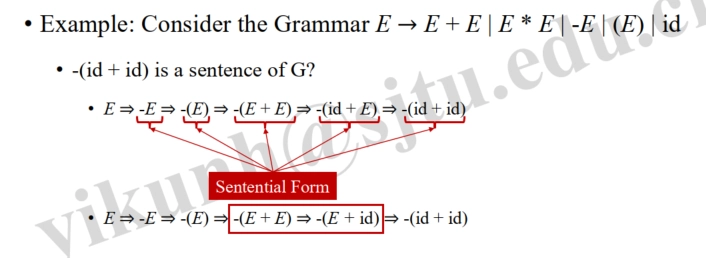
Leftmost Derivation: the Leftmost Non-terminal is always replaced at first （最左边的非终结符总是第一个被替换）
- $ $
Rightmost Derivation: $ $
Parse Trees and Derivations
- What: A Graphical Representation of a Derivation （派生的图形表示）
- filtering out the order in which productions applied to replace non-terminals （过滤出应用于替换非终结符的产生式的顺序）
- Example： 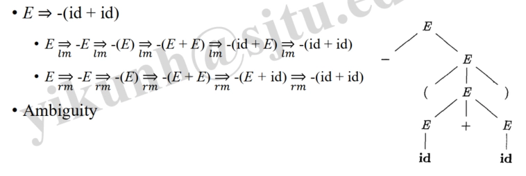
- What: A Graphical Representation of a Derivation （派生的图形表示）
Top-Down Parsing
- What: Create the Parse Tree from Top to Bottom
（从上到下创建解析树）
- from root to leaves （从根到叶）
- Why: for Parsing
- How: Derive an Input String in the
Leftmost Manner （以最左边的方式派生输入字符串）
- consistent with string scanning （与字符串扫描一致）
- Key: determine the production to be applied for a non-terminal （确定要应用于非终结符的产生式）
- Recursive-Descent Parsing
- require backtracking to find right production （需要回溯以找到正确的产生式）
- general, but inefficient
- Predictive Parsing
- a special case of Recursive-Descent Parsing
- no backtracking, choosing by looking ahead at input symbols （无需回溯，通过提前查看输入符号进行选择）
Recursive-Descent Parsing
1
2
3
4
5
6
7
8
9
10
void A() {
// Choose an A-production, A --> X1 X2 ...Xk;
for (i = 1 to k) {
if (Xi is a non-terminal)
call Xi();
else if (Xi equals the current input symbol a)
advance the input to the next symbol;
else ... // an error has occurred
}
}- Example: 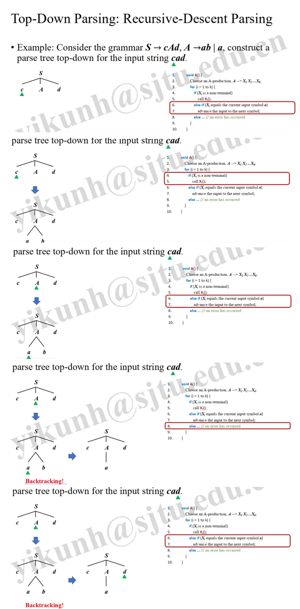
Left Recursion （左递归）
- What: The Grammar has a non-terminal A such that there exists a derivation $\mathbf{A} \overset{+}{\Rightarrow} \mathbf{A} \alpha$ （文法有一个非终结符A，使得存在一个派生$\mathbf{A} \overset{+}{\Rightarrow} \mathbf{A} \alpha$）
- Why: Recursive-Descent Parsing cannot handle Left Recursion. （递归下降解析无法处理左递归）
- How: Transform the grammar to eliminate
Left Recursion. （转换文法以消除左递归）
- ==Immediate Elimination: A → Aα|β ⇒ A → βA′, A′ → αA′|𝝐==
- $ _1 | | _m | _1 | | _n (_1 | | _n) , (_1 | | _m) | $
- Example: 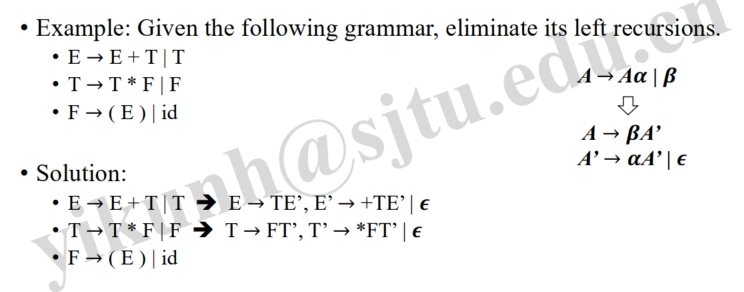
Left Recursion Elimination （消除左递归）
- INPUT: Grammar G without Cycles or 𝝐-productions
（无循环或𝝐产生式的文法）
- Cycle: $\mathbf{A} \overset{+}{\Rightarrow} \mathbf{A}$
- 𝝐-production: A → ϵ
- OUTPUT: Equivalent Grammar without Left Recursions （没有左递归的等效文法）
- Steps:
1
2
3
4
5
6
7
8supposing there are the Non-terminals with Order A1, A2..., An for (i from 1 to n) { for (j from 1 to i-1) { replace each Ai → Aj𝛾 by Ai → 𝛿1𝛾 | 𝛿2𝛾 | ... | 𝛿𝑘𝛾, where: Aj → 𝛿1 | 𝛿2 | ... | 𝛿𝑘 are all current Aj-productions } eliminate the Immediate Left Recursion among the Ai-productions } - Example: 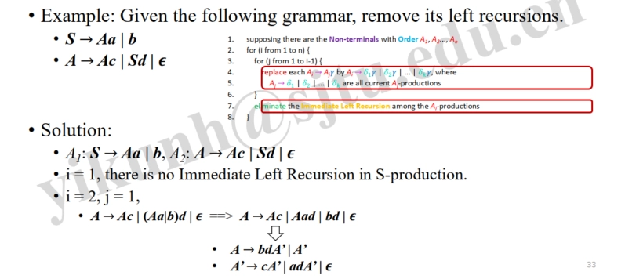
Predictive Parsing
- What: recursive-descent parsers needing no
backtracking （不需要回溯的递归下降解析器）
- can be constructed for LL(k) grammar （可以为LL(k)文法构造）
- L: scanning input from Left to right
- L: producing a Leftmost derivation
- k: using k input symbols of lookahead at each step to make decision
- can be constructed for LL(k) grammar （可以为LL(k)文法构造）
- Why: a unique production to apply, or none to use (error)
- Example: LL(1)
- stmt → if (expr) stmt else stmt | while (expr) stmt | { stmt_list}
- How: FIRST and FOLLOW
- assist in choosing which production to apply, based on the next input symbol （根据下一个输入符号选择应用哪个产生式）
FIRST and FOLLOW
- FIRST: the set of terminals that begin strings
derived from a non-terminal or a string of grammar symbols.
（从非终结符或语法符号字符串派生的字符串开始的终结符集合）
- FIRST(𝜶): what the first symbol would be for 𝜶
- 𝜶: string of grammar symbols
- return: set of terminals that begin strings derived
from 𝜶
- first symbols of strings derived from 𝜶
- HOW：
- if X is a terminal, then FIRST(X) = {X}
- if X is a
non-terminal, and X → Y1Y2…Yk
- add all non-𝝐 symbols of Y1 to FIRST(X)
- add all non-𝝐 symbols of Y2 to FIRST(X), if ϵ ∈ FIRST(Y1)
- ···
- add all non-𝝐 symbols of Yk to FIRST(X), if ϵ ∈ FIRST(Y1) and ϵ ∈ FIRST(Y2) and ··· and ϵ ∈ FIRST(Yk − 1)
- add 𝝐 to FIRST(X), if ϵ ∈ FIRST(Y1) and ϵ ∈ FIRST(Y2) and ··· and ϵ ∈ FIRST(Yk)
- Example: 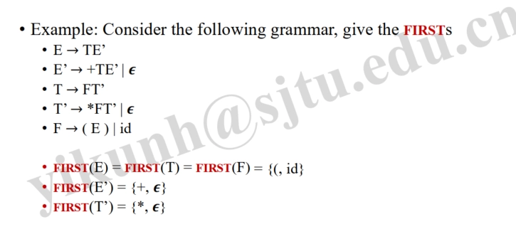
- FOLLOW: the set of terminals that can appear
immediately to the right of a non-terminal in some sentential form.
（在某些句子形式中，可以出现在非终结符右侧的终结符集合）
- FOLLOW(N): what is the next symbol of N
- N: a non-terminal
- return: set of terminals can appear immediately after N in a sentential form
- HOW:
- place $ in FOLLOW(S)
- S: start symbol
- $: input right end-marker
- for each production M → αNβ
- add all symbols in FIRST(β) to FOLLOW(N), except 𝝐
- if ϵ ∈ FIRST(β), add all symbols in FOLLOW(M) to FOLLOW(N)
- for each production M → αN
- add all symbols in FOLLOW(M) to FOLLOW(N)
- place $ in FOLLOW(S)
- Example: 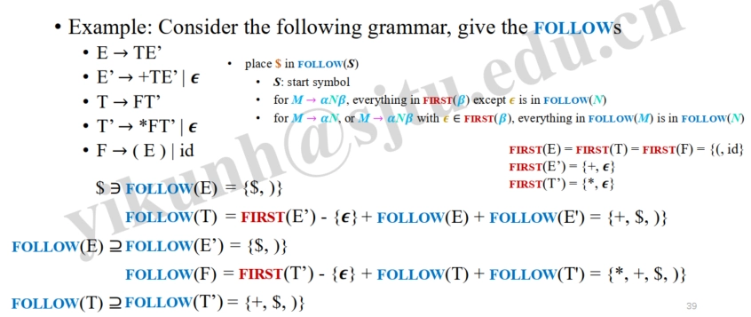
LL(1) Grammar
- What: Any A → α | β
Represents two Distinct Productions （A → α | β表示两个不同的产生式）
- FIRST(α)
and FIRST(β)
are disjoint sets.（二者是互不相交的集合）
- For no terminal a, do both α and β derive strings beginning with a. （二者不会同时派生以a开头的字符串）
- At most one of α and β can derive the empty string. （至多一个α和β可以派生空字符串）
- If ϵ ∈ FIRST(β), then FIRST(α) and FOLLOW(A) are disjoint sets. （如果ϵ ∈ FIRST(β)，则FIRST(α)和FOLLOW(A)是互不相交的集合）
- FIRST(α)
and FIRST(β)
are disjoint sets.（二者是互不相交的集合）
- Why: Proper Production is Selected by Looking ONLY at the Next Input Symbol. （通过仅查看下一个输入符号来选择适当的产生式）
- How: By Parsing Table, a Two-Dimensional Array
- M[A, a] = α, when deriving A, apply A → α if coming up with a. （当派生A时，如果出现a，则应用A → α）
LL(1) Parsing
- Predictive Parsing Table Construction
- INPUT: Grammar G.
- OUTPUT: Parsing Table M.
- STEPS: For each production A → α:
- For each terminal a ∈ FIRST(α), add A → α to M[A, a].
- If ϵ ∈ FIRST(α), then for each terminal b ∈ FOLLOW(A), add A → α to M[A, b].
- If ϵ ∈ FIRST(α) and $ ∈ FOLLOW(A), add A → α to M[A, $].
- Example: 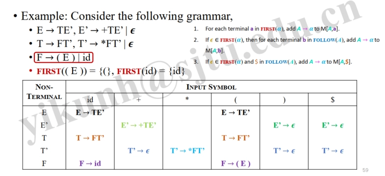 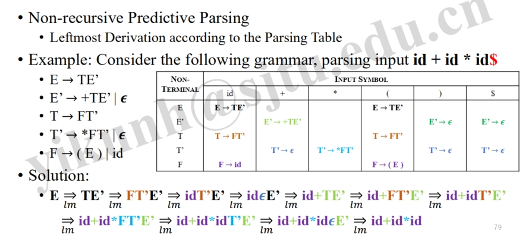
- Implementation
- Stack-based Method, mimicking a leftmost derivation （基于栈的方法，模仿最左派生）
Left Factoring
- When the decision is not clear, defer it until seeing enough symbols. （当决策不明确时，推迟到看到足够的符号为止）
- Left-Factored:
- A → 𝜶𝜷1|𝜶𝜷2 by A → 𝜶A′, A′ → 𝜷1|𝜷2
- How:
- For each non-terminal A, find the longest common prefix 𝜶 of its alternatives.
- If 𝜶 is not empty, replace all of the A-productions
- Example:
- A → 𝜶𝜷1|𝜶𝜷2|...|𝜶𝜷n|𝜸 by A → 𝜶A′|𝜸, A′ → 𝜷1|𝜷2|...|𝜷n
Non-LL(1) Grammar
- Non-LL(1) Grammars:
- grammars with Left Recursion （左递归的文法）
- grammars not Left Factored （未左因子化的文法）
- grammars with Ambiguity （歧义文法）
- Thus, before Predictive Parsing,
- perform Left Factoring （左因子化）
- eliminate Left Recursion (prerequisite of the elimination?) （消除左递归）
- remove Ambiguity （消除歧义）
Bottom-Up Parsing
- What: the construction of a parse tree beginning at the leaves and working up to the root （从叶子开始构建解析树，直到根）
- Why: not all grammars can be made LL(1)
- How: construct rightmost derivation in the reverse
order
- Reduction: “Reversed Derivation”（归约：反向派生）
- from the string to the start symbol （从字符串到起始符号）
- The body of a production is replaced by the non-terminal at its header. （用产生式的头部替换产生式的主体）
- $S \overset{rm}{\Rightarrow} \gamma_0
\overset{rm}{\Rightarrow} \gamma_1 \overset{rm}{\Rightarrow} \dots
\overset{rm}{\Rightarrow} \gamma_n \overset{rm}{\Rightarrow}
\omega$
- find the rightmost derivation in the reverse order: “leftmost reduction” （找到右侧派生的反向顺序：最左侧归约）
- “Left-to-Right, Rightmost Derivation in Reverse”: LR Parsing
- Reduction: “Reversed Derivation”（归约：反向派生）
- Example： 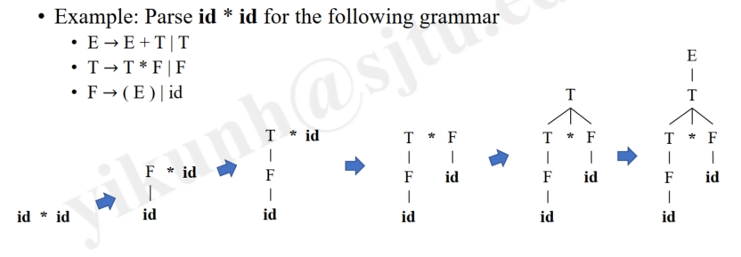
- E ⇒ T ⇒ T * F ⇒ T * id ⇒ F * id ⇒ id * id
Handles
- What: if $\mathbf{S}
\overset{*}{\Rightarrow} \mathbf{\alpha A \omega}
\overset{}{\Rightarrow} \mathbf{\alpha \beta \omega}$, then
production A → β
in the position following α is a
handle of αβω.
- a substring that matches the body of a production, representing a step of reduction （与产生式的主体匹配的子字符串，表示归约的一步）
- a pair of values: (production, position)
- Why: handle pruning for bottom-up parsing
（处理底向上解析的剪枝）
- identify handles and reduce them to the appropriate leftmost non-terminals （识别句柄并将其归约到适当的最左非终结符）
- How: by using a stack to keep track of the current position in the input string and the corresponding production rules （使用栈来跟踪输入字符串中的当前位置和相应的产生式规则）
- Example： 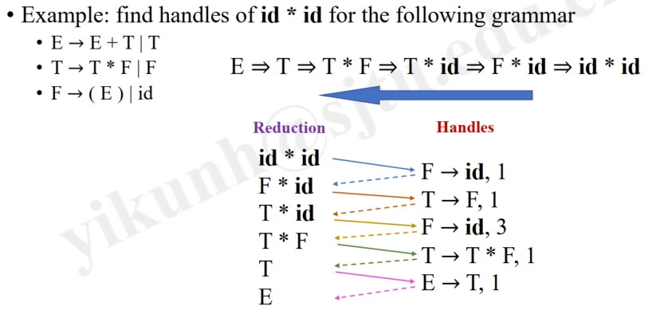
Shift-Reduce Parsing （移进归约解析）
- How: Stack + Input Buffer
- Stack: reduced Grammar Symbols
- Input Buffer: rest of the String to be parsed
- Actions
- Shift: move the next symbol onto stack
- Reduce: replace the handle on the top of stack
- Accept: announce the success of parsing
- Error: discover syntax errors, and call for recovery
- Example: 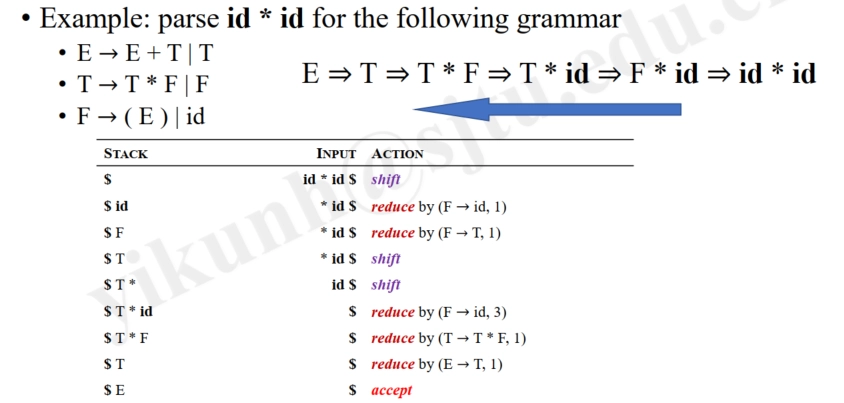
Operator-Precedence Parsing （运算符优先解析）
- What: a shift-reduce parser handling
operator-precedence grammar （处理运算符优先文法的移位归约解析器）
- operator-precedence grammar: a subset of LR(1) grammar （运算符优先文法：LR(1)文法的一个子集）
- for each Production:
- no 𝝐 in the body （主体中没有空字符）
- no two consecutive non-terminals in the body （在主体中没有两个连续的非终结符）
- Why: to handle expressions with operator precedence and associativity （处理具有运算符优先级和结合性的表达式）
- How: find handles according precedence
- Precedence （优先级）
- a < ·b: a’s precedence is lower than b’s
- a = ·b: … is equal to …
- a > ·b: … is higher than …
- Precedence Climbing Method （优先级爬升法）
- scan the input from Left to Right until >· is encountered
- then, scan backward until <· is encountered
- that between <· and >· is the handle
- Implementation with STACK (栈实现)
- let a be the top Terminal on the STACK （栈顶终结符）
- let b be the INPUT Symbol under processing （正在处理的输入符号）
- if a < ·or = ·b, Shift
- else if a > ·b, Reduce
- Precedence （优先级）
- Example: 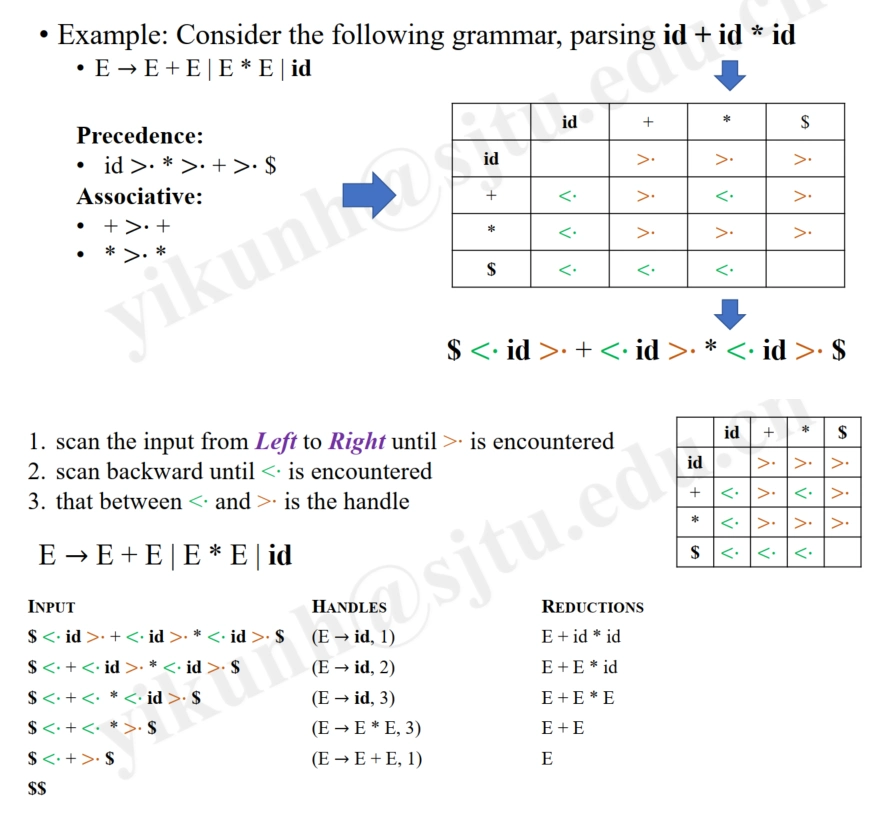 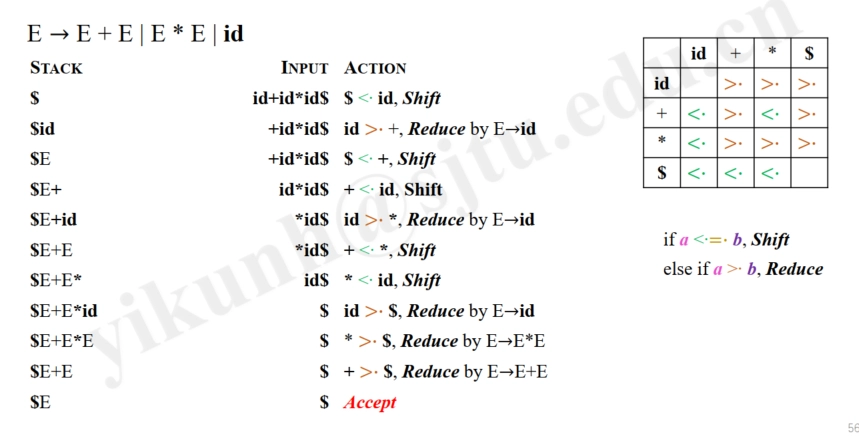
OPP: Precedence Relation Construction （优先级关系构造）
Precedence Relation
- If operator a has
higher precedence than b
- a > ·b
- b < ·a
- If a and b has equal precedence
- if left-associative, then a > ·b and b > ·a
- if right-associative, then a < ·b and b < ·a
- For all operator a
- a < ·id, id > ·a
- $ < ·a, a > ·$
- a < ·(, ( < ·a, a > ·), ) > ·a
- ( = ·)
LEADING and TRAILING
- LEADING: the set of symbols that can appear at the
beginning of a string derived from a non-terminal
（可以出现在从非终结符派生的字符串开头的符号集合）
- $\mathbf{LEADING(Q)} = \{\mathbf{Y}, \mathbf{N} \ | \ \mathbf{Q} \overset{+}{\Rightarrow} \mathbf{Y\delta} \ or\ \mathbf{Q} \overset{+}{\Rightarrow} \mathbf{N Y \delta}, \mathbf{N} \in \mathbf{V_n}, \mathbf{Y} \in \mathbf{V_t}\}$
- for Q → Yδ
or Q → NYδ,
we have:
- Y, N ∈ LEADING(Q)
- LEADING(N) ⊆ LEADING(Q)
- TRAILING: the set of symbols that can appear at the
end of a string derived from a non-terminal
（可以出现在从非终结符派生的字符串末尾的符号集合）
- $\mathbf{TRAILING(P)} = \{\mathbf{X}, \mathbf{N} \ | \ \mathbf{P} \overset{+}{\Rightarrow} \mu \mathbf{X} \ or \ \mathbf{P} \overset{+}{\Rightarrow} \mu \mathbf{X} \mathbf{N}, \mathbf{N} \in \mathbf{V_n}, \mathbf{X} \in \mathbf{V_t}\}$
- for P → μX
or P → μXN,
we have:
- X, N ∈ TRAILING(P)
- TRAILING(N) ⊆ TRAILING(P)
- Example: 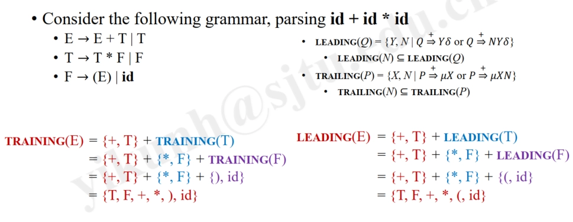
Constructing Precedence Relations
- X = ·Y
- if there is A → αXYβ, where X, Y ∈ V, α, β ∈ V*
- or, there is A → αXNYβ,
where N ∈ Vn ∪ {ϵ},
X, Y ∈ Vt
- adjacent symbols have equal precedence （相邻符号具有相等的优先级）
- at least one of them is a terminal （至少有一个是终结符）
- e.g., E + T, T * F, E+ = T
- adjacent symbols have equal precedence （相邻符号具有相等的优先级）
- X < ·Y
- if there is A → αXQβ, and $\mathbf{Q} \overset{+}{\Rightarrow} \mathbf{Y \delta}$, where X, Y ∈ V, Q ∈ Vn, α, β, δ ∈ V*
- or, there is A → αXQβ,
and $\mathbf{Q} \overset{+}{\Rightarrow}
\mathbf{N Y \delta}$, where N ∈ Vn ∪ {ϵ},
X, Y ∈ Vt
- $\mathbf{LEADING(Q)} = \{\mathbf{Y},
\mathbf{N} \ | \ \mathbf{Q} \overset{+}{\Rightarrow} \mathbf{Y\delta} \
or\ \mathbf{Q} \overset{+}{\Rightarrow} \mathbf{N Y \delta}\}$
- for A → αXQβ, we have X <· Symbols in LEADING(Q)
- $\mathbf{LEADING(Q)} = \{\mathbf{Y},
\mathbf{N} \ | \ \mathbf{Q} \overset{+}{\Rightarrow} \mathbf{Y\delta} \
or\ \mathbf{Q} \overset{+}{\Rightarrow} \mathbf{N Y \delta}\}$
- X > ·Y
- if there is A → αPYβ, and $\mathbf{P} \overset{+}{\Rightarrow} \mu \mathbf{X}$, where X, Y ∈ V, P ∈ Vn, α, β, μ ∈ V*
- or, there is A → αPYβ, and $\mathbf{P} \overset{+}{\Rightarrow} \mu \mathbf{X} \mathbf{N}$, where N ∈ Vn ∪ {ϵ}, P ∈ Vn, X, Y ∈ VT
- $\mathbf{TRAILING(P)} = \{\mathbf{X},
\mathbf{N} \ | \ \mathbf{P} \overset{+}{\Rightarrow} \mu \mathbf{X} \
\text{or} \ \mathbf{P} \overset{+}{\Rightarrow} \mu \mathbf{X}
\mathbf{N}\}$
- for A → αPYβ, we have Symbols in TRAILING(P) > ·Y
Precedence Table
- Steps：
- for each production A → X1X2…Xk:
- for each X
- if Xi ∈ Vt and Xi + 1 ∈ Vt, then Xi = ·Xi + 1
- if Xi ∈ Vt and Xi + 2 ∈ Vt and Xi + 1 ∈ Vn, then Xi = ·Xi + 2
- if Xi ∈ Vt and Xi + 1 ∈ Vn, then Xi < ·LEADING(Xi + 1)
- if Xi ∈ Vn and Xi + 1 ∈ Vt, then Xi = ·Xi + 1 and TRAILING(Xi) > ·Xi + 1
- for each X
- for the Start Symbol S:
- $ < ·LEADING(S)
- TRAILING(S) > ·$
- for each production A → X1X2…Xk:
- Example: 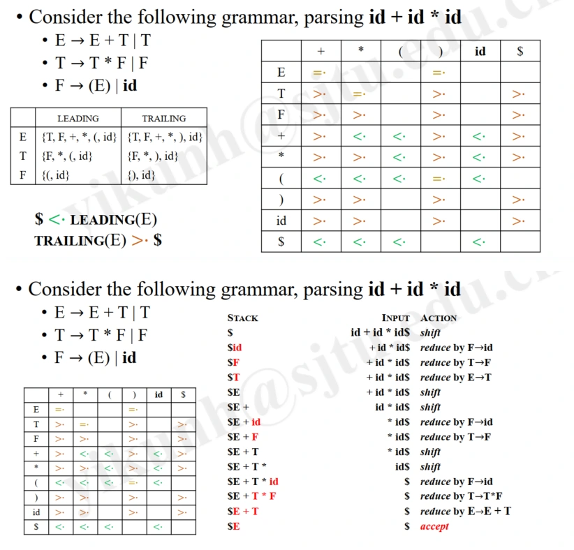
OPP: Some More
- Unary Minus vs. Binary Minus （一元负号与二元负号）
- Leave It to Scanners （留给扫描器）
- return two different tokens for the two （返回两个不同的tokens）
- lookahead is required （需要向前看）
- OPPs are not used often in practice （运算符优先级在实践中不常用）
- limited scenarios and applications （有限的场景和应用）
- but, simple -> part of a complex parsing system （但简单，是复杂解析系统的一部分）
LR Parsing
- What:
- left-to-right scanning
- rightmost derivation in reverse
- Why
- can recognize virtually all programming languages of context-free grammars （几乎可以识别所有上下文无关文法的编程语言）
- is the most general non-backtracking shift-reduce parsing method
known （已知的最通用的非回溯移位归约解析方法）
- yet is still efficient （仍然高效）
- can detect a syntax error as soon as possible （尽快检测语法错误）
- is a proper superset of the predictive parsing （是预测解析的适当超集）
LR(0) Parsing
Items and the LR(0) Automaton
- Problem: when to shift and when to reduce?
- how to decide whether that on the top of the stack is a handle? （如何判断栈顶的句柄？）
- LR(0) Items: a production with a dot at some
position in its body （LR(0) 项目：在其主体的某个位置有一个点的产生式）
- prefixes of a valid production, indicating how much we have seen at the point （有效产生式的前缀，指示我们在该点上已经看到多少）
- e.g. A → XYZ
yields four items（例如A → XYZ产生四个项）：
- A → ⋅XYZ: hope to see XYZ next on the input
- A → X ⋅ YZ: hope to see YZ next on the input
- A → XY ⋅ Z: hope to see Z next on the input
- A → XYZ⋅: hope to see nothing next on the input
- kind of state + transition → automaton
- Kernel and Non-Kernel Items
- Kernel Items: the Initial Item + those whose dots are not at the left
- Non-Kernel Items: Otherwise
- LR(0) Automaton: CLOSURE + GOTO
- CLOSURE: set of Items （项集的闭包）
- GOTO: the Transition Function （转换函数）
CLOSURE and GOTO
- CLOSURE(I):
- I: a set of Items for a grammar G（文法G的项集）
- construct by two rules:
- every Item in I is added in to CLOSURE(I) （I中的每个项目都添加到CLOSURE(I)中）
- if A → α ⋅ Bβ is in CLOSURE(I) and B → γ is a production of G, then add B → ⋅γ to CLOSURE(I) （如果A → α ⋅ Bβ在CLOSURE(I)中，并且B → γ是G的一个产生式，则将B → ⋅γ添加到CLOSURE(I)中）
- Example: 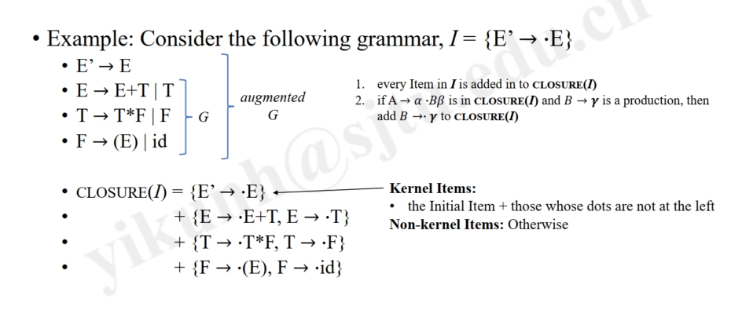
- GOTO(I, X):
- I: a set of Items for a grammar G （文法G的项集）
- X: a grammar symbol （文法符号）
- the closure of the set of items [A → αX ⋅ β]
such that [A → α ⋅ Xβ]
is in I （GOTO(I, X)是I中所有形如[A → α ⋅ Xβ]的项所对应的项[A → αX ⋅ β]的集合的闭包）
- the transition from the state for I under input X （在输入X下，I的状态转换）
- construct by
- for each Item A → α ⋅ Xβ in I
- then every Item in CLOSURE(A → αX ⋅ β) is added to GOTO(I, X)
- Example: 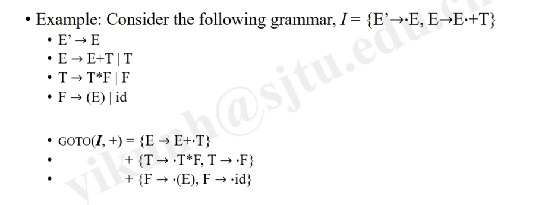
Automaton Construction
- INPUT: a grammar G
- OUTPUT: a LR(0) automaton
- Construction:
- augment G to G′ by adding a new start symbol S′ and production S′ → S （通过添加新的起始符号S′和产生式S′ → S扩展文法G至G′）
- C:= {CLOSURE(S′ → ⋅S)} （先求CLOSURE(S′ → ⋅S)，作为闭包的集合C中的第一个闭包）
- repeat:
- for each Item I in
C and each grammar
symbol X in G′
（对C中每个项目I和G′中的每个文法符号X）
- if GOTO(I, X)
is not empty and not in C （如果GOTO(I, X)不为空且不在C中，注意GOTO(I, X)是项集I在输入符号X下的转换的闭包）
- add GOTO(I, X) to C
- if GOTO(I, X)
is not empty and not in C （如果GOTO(I, X)不为空且不在C中，注意GOTO(I, X)是项集I在输入符号X下的转换的闭包）
- for each Item I in
C and each grammar
symbol X in G′
（对C中每个项目I和G′中的每个文法符号X）
- until no new Items are added to C
- Example: 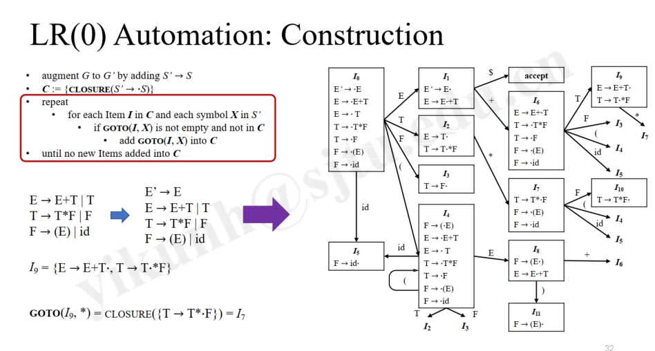
Parsing Table Construction
- LR(0) Parsing Table 𝕋:
- Rows: states
- Columns: grammar symbols
- terminals for SHIFT and REDUCE actions
- non-terminals for GOTO actions
- Construction: each edge X: (sm, sn)
（对于每条边X，(sm, sn)为其起始和终止状态，X为文法符号）
- if X is a terminal a, then 𝕋[sm, a] = SHIFT n （记作s n）
- if X is a non-terminal A, then 𝕋[sm, A] = GOTO n （记作n）
- if A → β⋅ is in sm, then for each terminal a, 𝕋[sm, a] = REDUCE A → β （记作r n，其中n是产生式的编号，用罗马数字表示）
- if S′ → S⋅ is in sm, then for each terminal a, 𝕋[sm, a] = ACCEPT （记作a/acc）

- Example: 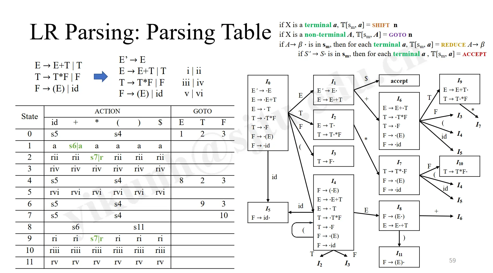 > 注：在上面的例子中，状态1、2、9均存在移进-归约冲突，因此不属于LR(0)文法。
Alogrithm and Implementation （算法与实现）
INPUT: an input string ω and an LR-parsing table 𝕋 for a grammar G
OUTPUT: if ω ∈ L(G), the reduction steps of a bottom-up parse for ω
STEPS:
1
2
3
4
5
6
7
8
9
10
11
12
13
14
15
16let a be the first symbol of 𝜔$ //设a是输入字符串𝜔$的第一个符号 push state 0 onto the stack //将状态0推入栈中 while (1) { let s be the state on top of the stack //设s是栈顶的状态 if (ACTION[s, a] = shift t) { //如果ACTION[s, a] = shift t push t onto the stack //将t推入栈中 let a be the next input symbol //设a是下一个输入符号 } else if (ACTION[s, a] = reduce A→𝛽) { //如果ACTION[s, a] = reduce A→𝛽 pop |𝛽| symbols off the stack //从栈中弹出|𝛽|（𝛽包含的符号数）个状态 let t be the top of the stack now //设t是栈顶的状态 push GOTO[t, A] onto the stack //将GOTO[t, A]推入栈中 } else if (ACTION[s, a] = accept) break //如果ACTION[s, a] = accept，则结束 else call error-handling routine }Example: 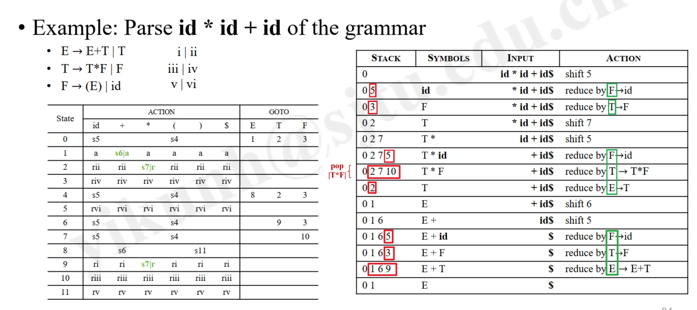
LR(0) Conflicts
- Reduce-Reduce Conflicts:
- state has two reduce items
- e.g. A → α⋅ and B → β⋅
- Shift-Reduce Conflicts:
- state has a reduce item and a shift item
- e.g. A → α ⋅ kγ and B → β⋅
- To avoid conflicts: SLR(1) Parsing
SLR(1) Parsing
Parsing Table Construction
- LR(0) Parsing Table 𝕋 ⇒
SLR(1) Parsing Table 𝕋
- Rows: states
- Columns: grammar symbols
- terminals for SHIFT and REDUCE actions
- non-terminals for GOTO actions
- Construction: each edge X: (sm, sn)
- if X is a terminal a, then 𝕋[sm, a] = SHIFT n
- if X is a non-terminal A, then 𝕋[sm, A] = GOTO n
- if A → β⋅ is in sm, then for each terminal a ∈ FOLLOW(A), 𝕋[sm, a] = REDUCE A → β （只对FOLLOW(A)中的终结符进行归约）
- if S′ → S⋅ is in sm, then 𝕋[sm, $] = ACCEPT （只对$进行归约）
- Example: 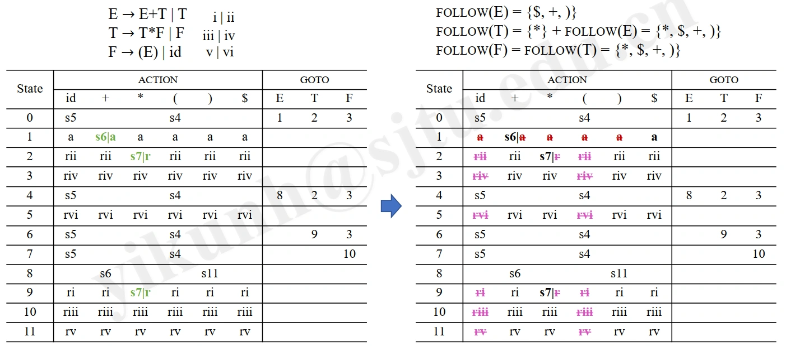
SLR(1) Conflicts
- Reduce-Reduce Conflicts:
- state has two reduce items
- e.g. A → α⋅ and
B → β⋅
- if FOLLOW(A) ∩ FOLLOW(B) = ∅, safe for SLR(1) （如果FOLLOW(A) ∩ FOLLOW(B) = ∅，则SLR(1)安全）
- Shift-Reduce Conflicts:
- state has a reduce item and a shift item
- e.g. A → α ⋅ kγ
and B → β⋅
- if k ∉ FOLLOW(B), safe for SLR(1) （如果k ∉ FOLLOW(B)，则SLR(1)安全）
LR(1) Parsing
- How: check the immediate following symbols of non-terminals for reduction （检查非终结符的直接后续符号以进行归约）
- LR(1) Item = [LR(0) Item,
Following Symbol]
- e.g. [A → XY ⋅ Z, a]
- where a is the following terminal symbol of A （a是A的后续终结符）
- when Z is not empty, the same as LR(0) Item （当Z不为空时，与LR(0)项相同）
- otherwise, A → XY ⋅ Z
is applied only when the next input symbol is a
（否则，只有在下一个输入符号为a时才应用A → XY ⋅ Z）
- instead of SLR(1)’s ALL A’s following symbols, let along LR(0)’s ALL terminal symbols （而不是SLR(1)的所有A的后续符号，甚至LR(0)的所有终结符）
LR(1)’s CLOSURE and GOTO
- LR(1)’s CLOSURE(I)
- every Item in I is added in to CLOSURE(I)
- repeat:
- if [A → α ⋅ Bβ, a] is in CLOSURE(I) and B → γ is a production of G, then for each terminal b in FIRST(βa), add [B → ⋅γ, b] into CLOSURE(I)
- until no more new Items can be added into CLOSURE(I)
- only reduce B when it is followed by that in FIRST(βa) （仅在后面跟着FIRST(βa)中的项时才归约B）
- LR(1)’s GOTO(I, B)
- if [A → α ⋅ Bβ, a] in I
- then every Item in CLOSURE({[A → αB ⋅ β, a]})
is in GOTO(I, B)
- GOTO(I, B) ⊇ CLOSURE({[A → αB ⋅ β, a]})
- Those of Kernel Items inherited from the previous state （从前一个状态继承的内核项）
- GOTO(I, B) ⊇ CLOSURE({[A → αB ⋅ β, a]})
- Example: 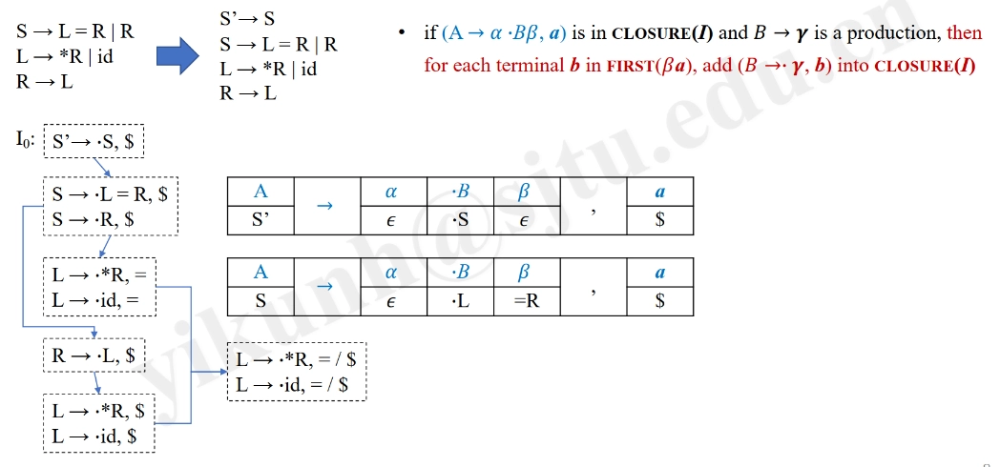
Automaton Construction
- INPUT: a grammar G
- OUTPUT: a LR(1) automaton
- Construction:
- augment G to G′ by adding a new start symbol S′ and production S′ → S （扩展文法）
- C:= {CLOSURE([S′ → ⋅S, $])} （初始化项集C）
- repeat:
- for each Item I in
C and each grammar
symbol X in G′
- if GOTO(I, X)
is not empty and not in C
- add GOTO(I, X) to C
- if GOTO(I, X)
is not empty and not in C
- for each Item I in
C and each grammar
symbol X in G′
- until no new Items are added to C
- Example:
- Example: 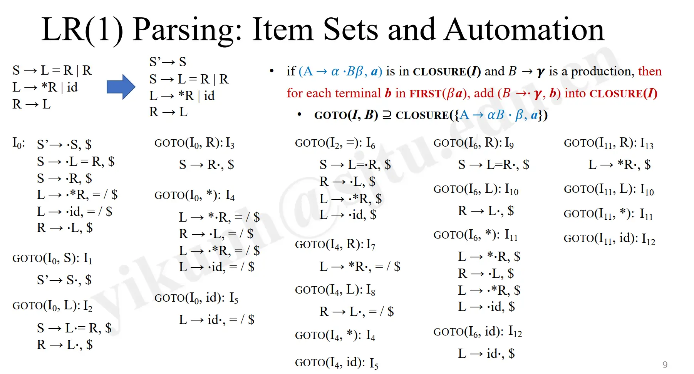
- Exercise: 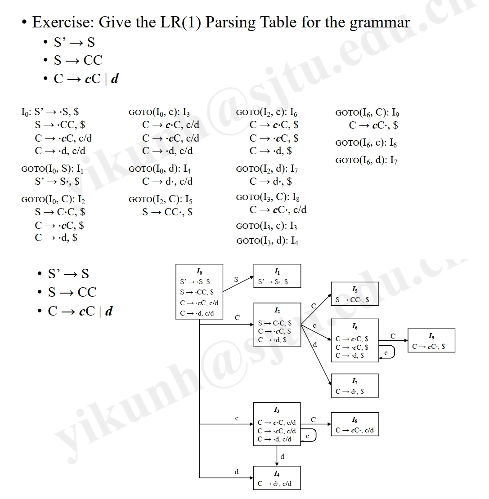
Parsing Table Construction
- LR(1) Parsing Table 𝕋:
- Rows: states
- Columns: grammar symbols
- terminals for SHIFT and REDUCE actions
- non-terminals for GOTO actions
- Construction: each edge X: (sm, sn)
- if X is a terminal a, then 𝕋[sm, a] = SHIFT n
- if X is a non-terminal A, then 𝕋[sm, A] = GOTO n
- if [A → β⋅, a] (the kernel) is in sm, then 𝕋[sm, a] = REDUCE A → β
- if [S′ → S⋅, $] is in sm, then 𝕋[sm, $] = ACCEPT
- Example: 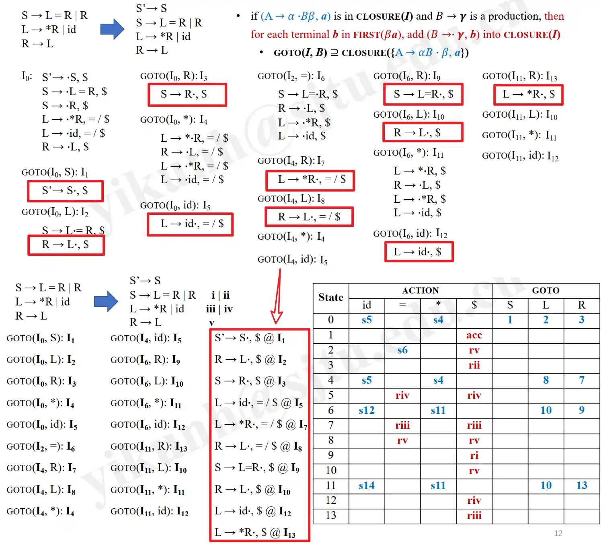 > 注：上表中[11, id]应为s12，即𝕋[11, id] = s12。
LALR(1) Parsing
- What: Look Ahead LR(1)
- Why: smaller parsing table than
LR(1) for practice（比LR(1)小的解析表）
- equal to SLR(1) in state number
（与SLR(1)状态数相等）
- e.g. In C, serveral hundred for SLR(1), serverals of thousands for LR(1)
- more powerful than SLR(1) in processing more grammars （比SLR(1)更强大，能处理更多文法）
- equal to SLR(1) in state number
（与SLR(1)状态数相等）
- How: combine Items with the same
Production Set in LR(1)
（将LR(1)中具有相同产生式集的项（同心集）组合在一起）
- e.g. [A → α⋅, a] and [A → α⋅, b] are combined into one state
- Compared to LR(1): 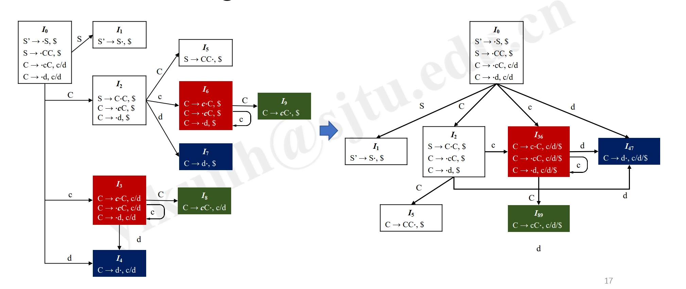
Automaton Construction
- INPUT: a grammar G
- OUTPUT: a LALR(1) automaton
- Construction:
- Construct LR(0) items as LALR(1) items’ cores for the grammar G′，then remove the non-kernel items （为文法G′构造LR(0)项作为LALR(1)项的核心，然后删除非核心项）
- For each kernal items K in Ii
and each grammar symbol X in G′,
calculate the lookahead symbols’ INIT and
PROPAGATION. （对于每个项集Ii中的核心项K和文法符号X，计算前瞻符号的初始值和传播）
- For each item (A → α ⋅ β)
in K
- J := {CLOSURE([A → α ⋅ β, #])} （初始化J）
- if [B → γ ⋅ Xδ, a] in J and a ≠ #, then B → γX ⋅ δ in GOTO(Ii, X) has a SELF-generated lookahead symbol a （J中的项若出现不为#的前瞻符号，则它是自发生成的）
- if [B → γ ⋅ Xδ, #] in J, then lookahead symbols are propagated from A → α ⋅ β to B → γX ⋅ δ in GOTO(Ii, X). （J中的项若出现#的前瞻符号，则该项会传播前瞻符号）
- Specifically, $ in [S′ → S⋅, $] is SELF-generated.
- For each item (A → α ⋅ β)
in K
- Construct the FROM − TO
table base on GOTO
for the kernel items to show the propagation of lookahead symbols
（为核心项构建FROM − TO表，以显示前瞻符号的传播）
- in step 2, we calculate propagated relationships.
- Propagate the lookahead symbols according to the FROM − TO
relationships until the fixed point achieved （根据FROM − TO关系传播前瞻符号，直到达到不变点）
- in step 2, we calculate self-generated lookahead symbols.
- Example: 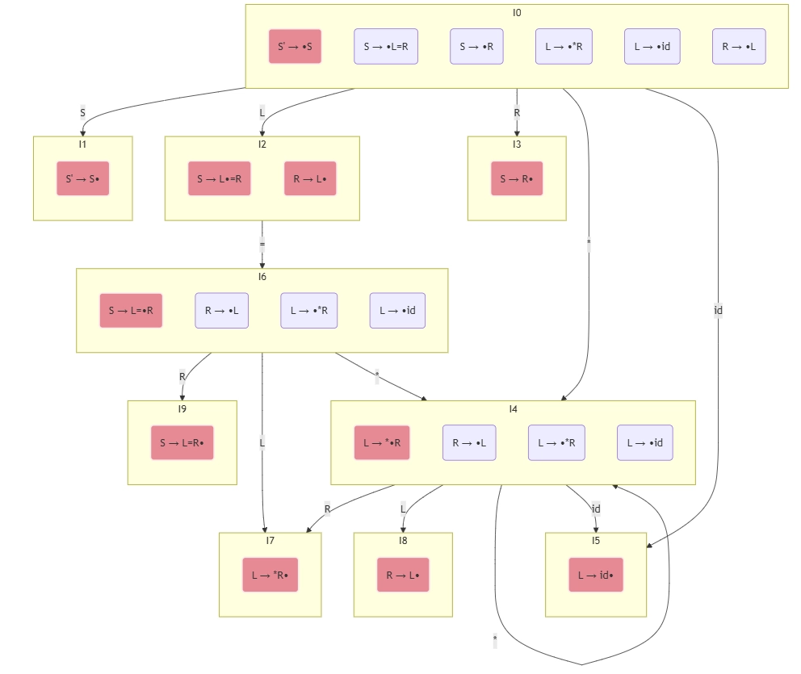 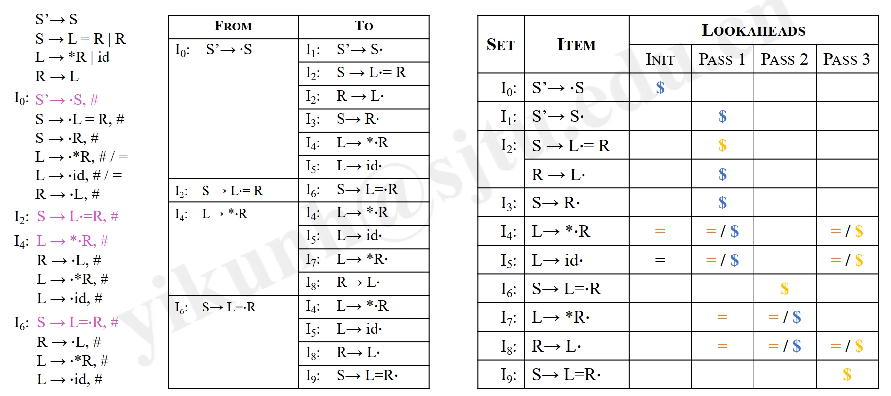 > 注：上右表中，前瞻符号在传播时，每一行的前瞻符号可以向右填满右侧列，最右一列是最终结果
Parsing Table Construction
- the same as LR(1) method
- LALR(1) Parsing Table 𝕋:
- Rows: states
- Columns: grammar symbols
- terminals for SHIFT and REDUCE actions
- non-terminals for GOTO actions
- Construction: each edge X: (sm, sn)
- if X is a terminal a, then 𝕋[sm, a] = SHIFT n
- if X is a non-terminal A, then 𝕋[sm, A] = GOTO n
- if [A → β⋅, a] (the kernel) is in sm, then 𝕋[sm, a] = REDUCE A → β
- if [S′ → S⋅, $] is in sm, then 𝕋[sm, $] = ACCEPT
- Example: 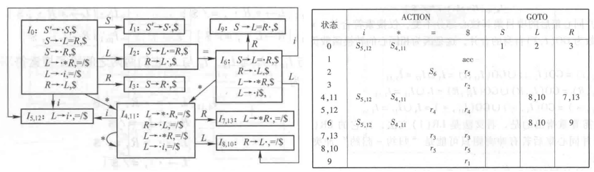
Capabilities vs. Conflicts
- LALR never introduces new SHIFT-REDUCE conflicts:
- SHIFT does not depend on lookaheads
- Example: 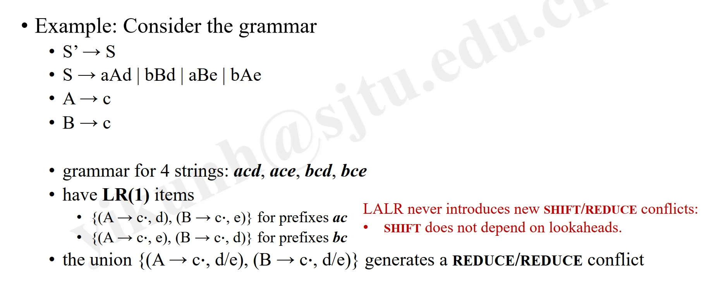
Summary
- LR(0), SLR(1),
LR(1), LALR(1)
- all working in SHIFT-REDUCE mode
- only different in Parsing Tables
- Parsing Tables - Capabilities
- LR(0) < SLR(1) < LALR(1) < LR(1)
- LR(0): Items
- SLR(1): Items with FOLLOW
- LALR(1): Items Combined from SLR(1) and LR(1)
- LR(1): Items with Subset of FOLLOW
Using Ambiguous Grammars
- In Theory: grammar for LR parsing tables should be unambiguous （在理论上：LR解析表的文法应该是无歧义的）
- For ambiguous grammars:
- there will be conflicts
- add new information/restrictions to resolve ambiguity
（添加新信息/限制以解决歧义）
- precedence, associativity, etc.
- get LR tables without conflicts
- Why embracing ambiguous grammars?
- some are much natural, the unambiguous one can be very complex （有些是非常自然的，无歧义的可能非常复杂）
- isolate common syntactic constructs for special-case optimizations （隔离常见的语法结构以进行特殊情况优化）
- Example:
Summary
编译原理
https://youyeyejie.github.io/posts/编译原理/